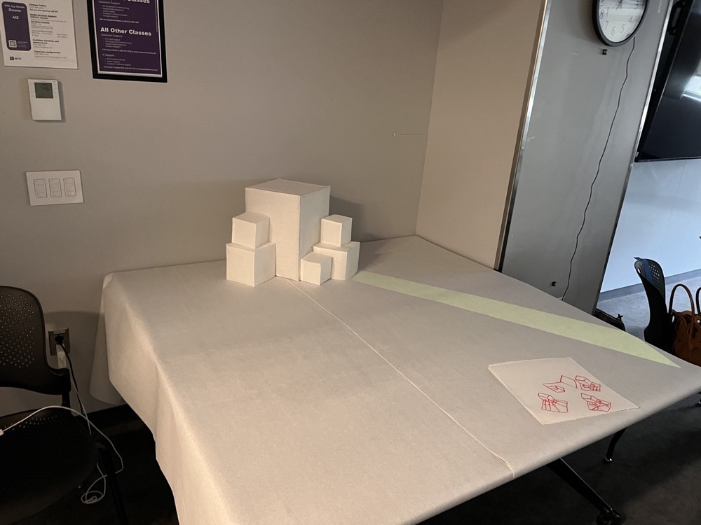
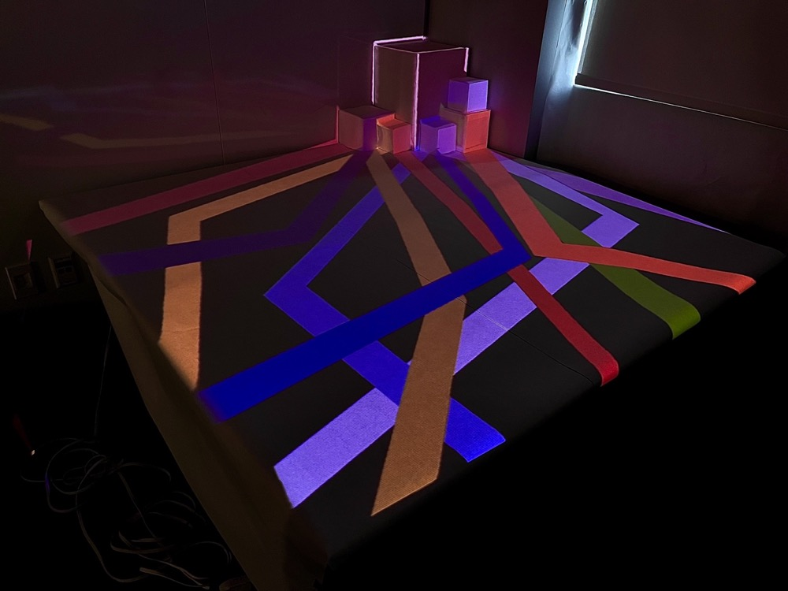

MEISEI Clossing

Open on YouTubeTechnology
- MadMapper
- Projector
- Microphone
MEISEI Clossing was created as one of the final projects at ITP Camp 2024 at New York University.
During the one-month program, I met people from many different backgrounds, including video, music, computer graphics, electronics, and large-scale network control. At first, I was surprised by the diversity of the environment, but gradually I realized that everyone shared a common desire to make something good.
The lines projected in this work represent the diverse backgrounds of the participants. Each line moves toward a shared goal: the cuboid structure placed at the center of the installation.
Because communication at ITP was active and participants constantly incorporated one another's ideas, the lower surfaces of the cuboids show lines of different colors, while the top surface shows those colors mixing together.
By letting different paths intersect and eventually become one color, the work expresses the sense of unity I felt within the ITP space.
